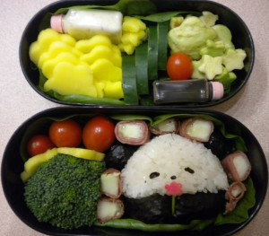

- The Baby Panda
- Ingredients:
- Rice
- Baby Tomatoes
- Avocado
- Mango
- Cucumber
- Brocolli
- Deli Turkey Meat
- Dried Sea Weed
- Green Leaf Lettuce
- Soy Sauce
- Ranch
- Cherry Tomatoes
- Pink Food Coloring
- Directions:
-
- Using 1/2 a cup of rice, mold the panda's head shape, packing the rice tightly in the palm of your hand. Place in bento box
- Shape 2 round rice balls and wrap with sea weed. Place in bento box as ears.
- Shape 2 arms and wrap with sea weed. Place in bento box as arms.
- Peel a cucumber and wrap it with a piece of turkey.
- Cut the turkey-wrapped cucumber into 1 inch lengths. Place in bento box around the panda's head.
- Use the trimmings from the sea weed to form eyes and a nose.
- Cut the avocado and mango with a cookie cutter and place in bento box.
- Cut a 1/4 inch wide piece off the end off of a broccoli and trim it into the shape of a flower and dip in pink food coloring. Use a small broccoli stem to create the flower stem
- Place broccoli florets and cherry tomatoes to fill the space ^.^
